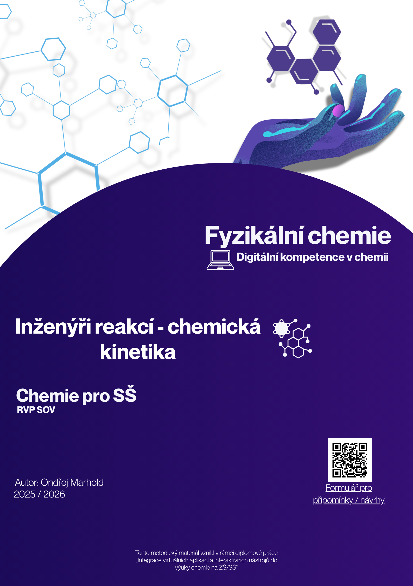

Inženýři reakcí - chemická kinetika
Fyzikální chemie a digitální kompetence v praxi


Některé chemické reakce trvají dny, rozklad polutantů v přírodě dokonce i týdny. V praxi si ale nemůžeme dovolit čekat tak dlouho, abychom zjistili, zda náš postup funguje. Tento 45minutový výukový modul pro SŠ a gymnázia ukazuje žákům, jak v počítači urychlit čas pomocí modelování a jak aplikovat teoretické znalosti chemické kinetiky na řešení krizových situací z reálného života.
Cíle a vazba na RVP
Aktivita je ukázkovým příkladem mezipředmětového propojení chemie a informatiky. V chemii žáci charakterizují faktory ovlivňující průběh reakcí (kinetika 1. řádu, Van 't Hoffovo pravidlo). V informatice naopak analyzují a interpretují data, vyslovují předpovědi a kriticky posuzují omezení použitých počítačových modelů. Z hlediska Bloomovy taxonomie žáci tvoří funkční modely, analyzují data z grafů a obhajují svá řešení.
Použitý nástroj: Insight Maker
Výuka se opírá o bezplatnou webovou aplikaci Insight Maker, která slouží k tvorbě systémově-dynamických modelů[cite: 257, 258]. Žáci zde graficky propojují zásoby (stocks), toky (flows) a proměnné, čímž simulují chování složitých systémů v čase bez nutnosti psát kód. Pro tvorbu vlastních modelů je nutná bezplatná registrace (ideálně předem přes Google účet).
Jak to funguje ve výuce (E-U-R)
- Evokace (5 min): Učitel pomocí kádinky s obarvenou vodou otevírá diskuzi o tom, jak nepraktické je sledovat pomalé děje v reálném čase, a představuje počítačové modelování jako řešení.
- Uvědomění (30 min): Žáci pracují s pracovními listy a aplikací Insight Maker. Řeší dva scénáře:
- Úkol 1 (Průmysl): Musí zachránit továrnu před ekologickou havárií tím, že modelují rozklad toxinu a hledají minimální teplotu pro jeho včasné odbourání před příjezdem cisterny.
- Úkol 2 (Farmakologie): Zkoumají poločas rozpadu antibiotik u zapomnětlivého pacienta a pomocí reverzního inženýrství (kinetiky) identifikují neznámý jed v krvi pacienta.
- Reflexe (10 min): Společná diskuze nad řešením a limity modelů (např. zanedbání času na ohřev reaktoru). Hodinu lze zakončit metodou "Exit-ticket", kde žáci reflektují, co si odnáší z chemie a informatiky.
Materiály ke stažení
Stáhněte si kompletní metodiku včetně autorského řešení a přístupu k předpřipraveným interaktivním tabulím.